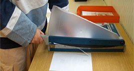
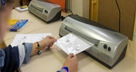
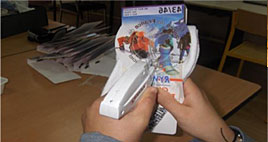

|
L'atelier conditionnement |
 |
|
Mardi, 14 Décembre 2010 14:28 |
|  |
L'atelier conditionnement s’adresse à des jeunes âgés de 14 à 18 ans.
Le travail proposé sur cet atelier concerne des adolescents pouvant accéder à un ESAT Conditionnement (Etablissement et Service d’Aide par le Travail) à leur majorité.
|
|
L’apprentissage de certaines techniques se fait à l’aide de supports adaptés au rythme et à la compréhension de chacun, par des fiches explicatives et d’un cahier d’atelier.
Pour atteindre ces objectifs plusieurs méthodes sont nécessaires :
Méthode explicative, méthode démonstrative, méthode de mémorisation, méthode de questionnement.
|
 |
|  |
La connaissance et l’utilisation des outils de travail sont abordés progressivement (balance, massicot, agrafeuse, plastifieuse, ciseaux, cutter, scotcheuse etc…). |
 |
|
Pour les 1ères années : Des travaux simples sont proposés pour découvrir l’atelier, pour évaluer les connaissances et les capacités de chacun.
- Apprendre à compter, à mesurer, à plier, à étiqueter
- Apprendre à se repérer sur un support
Pour les 2èmes années : Approfondissement des techniques et des savoir-faire.
- Plus de prise d’autonomie et d’initiative par rapport à un travail
- Visite d’entreprise et d’ESAT
Pour les 3èmes années et plus : Perfectionnement des apprentissages, degré d’exigence plus important demandé au niveau du soin apporté aux réalisations, approfondissement de la notion du mot « travail ».
- Mise en stage
- Valoriser chaque jeune, donner un sens à leurs démarches individuelles et collectives
- Découverte et apprentissage des transports en communs en vue des futurs stages
|
|
|
|
Mise à jour le Jeudi, 22 Octobre 2015 18:27 |